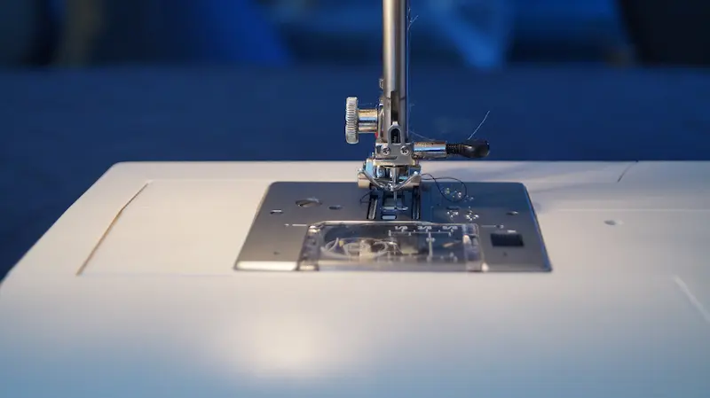
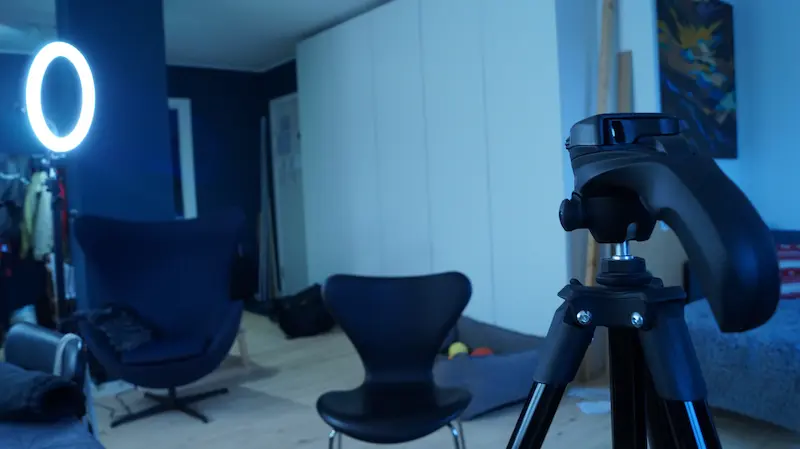
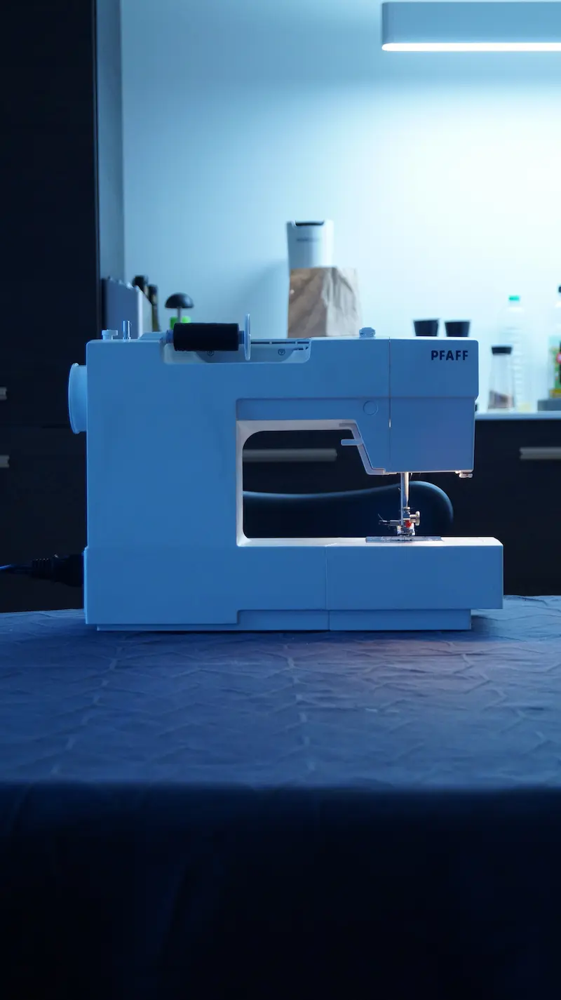
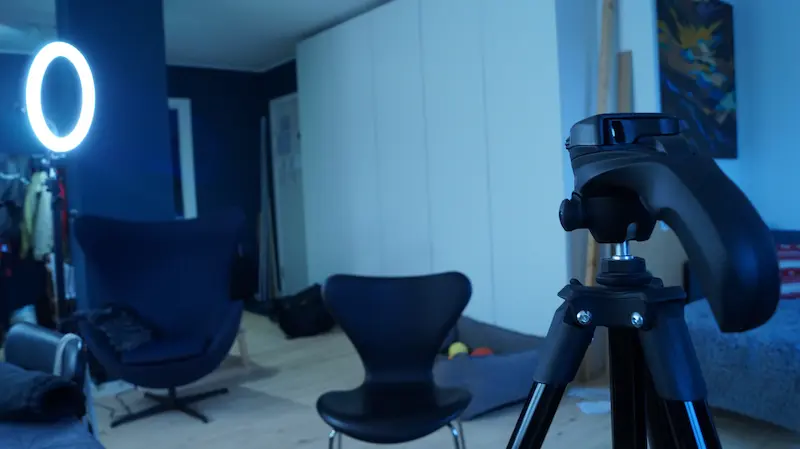

Galleri
Forneden ser du billeder tilknyttet opgaven. Der er billeder i højformat, brefromat, og et enkelt porttrætbillede
 


Forneden ser du billeder tilknyttet opgaven. Der er billeder i højformat, brefromat, og et enkelt porttrætbillede
